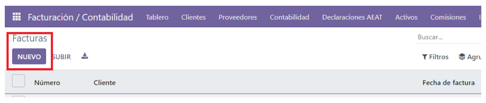
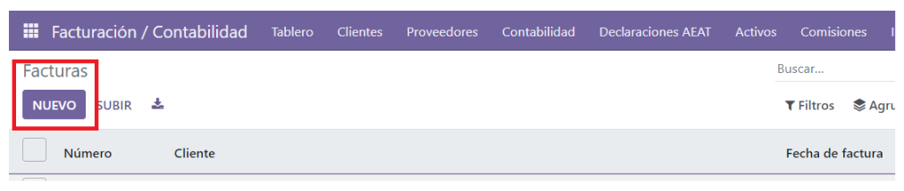
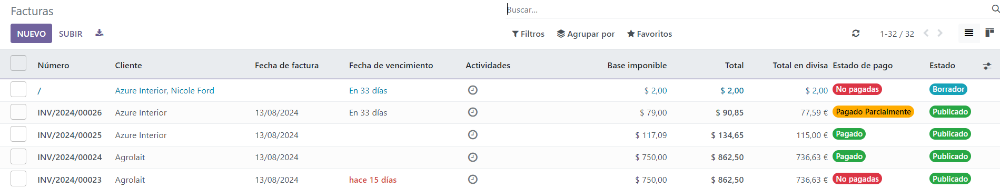
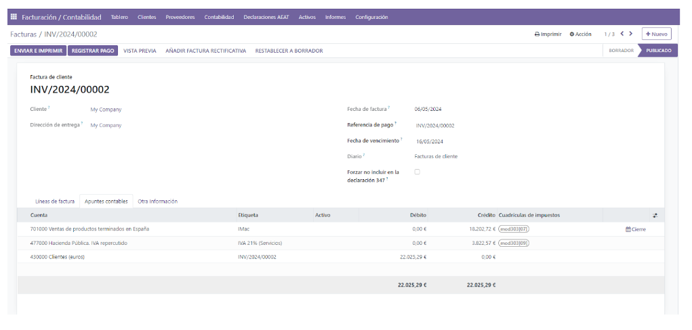
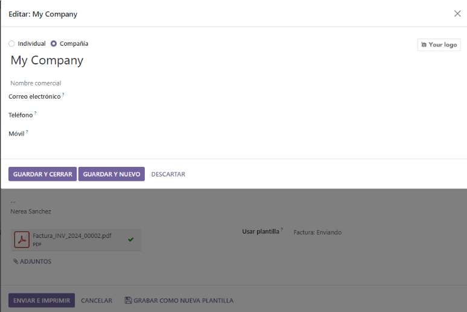
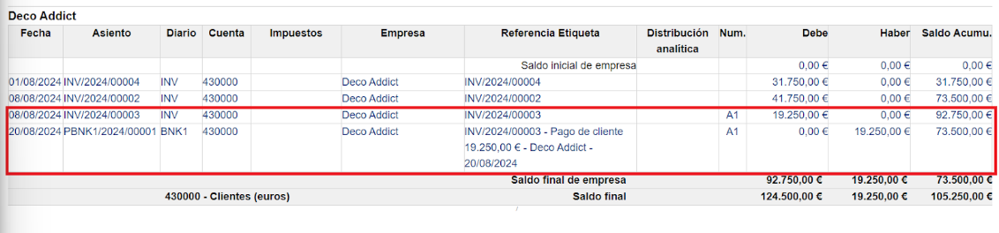

Customer invoices¶
From Customer Invoice to Payments Collection¶
With Odoo, you can choose from different workflows that cover your business needs. You can make a single payment for one invoice, or a single payment for multiple invoices, and even apply discounts for advance payments.
From Draft Invoice to Profit and Loss¶
The usual billing process for clients, after goods have been delivered or the service has been performed, involves issuing the invoice, the client depositing that payment in the bank, receiving the payment, reconciling the client’s account balance, and finally reporting it on the Balance Sheet.
Billing occurs when a contractual obligation is fulfilled. If you ship a box to a customer, you have met the terms of the contract and can invoice them. If your supplier sends you an order, they have fulfilled the terms of that contract and can invoice you. Additionally, the terms of the contract are fulfilled when the box is moved to or from a truck. At this point, Odoo supports the creation of what warehouse staff call a Draft Invoice.
Invoice creation¶
Draft invoices can be manually generated from other documents such as Sales Orders, Purchase Orders,etc. Although you can create a draft invoice directly if you would like.
An invoice must be provided to the customer with the necessary information in order for them to pay for the goods and services ordered and delivered. It must also include other information needed to pay the invoice in a timely and precise manner.
Draft invoices¶
The system generates invoice which are initially set to the Draft state. While these invoices remain unvalidated, they have no accounting impact within the system. There is nothing to stop users from creating their own draft invoices.
Let’s create a customer invoice with following information:
Customer:
Product:
Quantity:
Unit Price:
Taxes:

 


We fill in the previously indicated data:


The document is composed of three parts:
the top of the invoice, with customer information,
the main body of the invoice, with detailed invoice lines,
the bottom of the page, with detail about the taxes, and the totals.
Open or Pro-forma invoices¶
When we have the invoice with the data entered, the next step is to save it. To do this, we will click on the cloud icon that appears next to “New.”

In this way, the information will be saved, and Odoo will change the status from DRAFT to pending CONFIRMATION.
At this point, we can view the invoice by clicking on PREVIEW or see how the accounting entries would look by clicking on the “Accounting Entries” tab.
If we exit without confirming the invoice, when we check the invoice dashboard, it will appear as follows:
Without an invoice number and in a different color.
At this point, we can customize the information bar. At the end, next to Status, we will have three dots. If we click on them, a screen will appear with a series of checkmarks that allow us to add or remove elements from the information bar:

If we enter the invoice again and click on CONFIRM, Odoo will automatically assign an invoice number, and the corresponding accounting entries for this invoice will be created.

In this image, we can see what the accounting entry would look like:
Send the invoice to customer¶
From here, we have the option to send the invoice to the client in PDF format via email. We click on Send and Print, and it will take us to the following screen:
Where we will enter the email (if it is configured, this step won’t be necessary as the information will appear automatically).

A typical journal entry generated from a validated invoice will look like as follows:

Payment¶
In Odoo, an invoice is considered to be paid when the associated accounting entry has been reconciled with the payment entries. The invoice will remain as “Unpaid” until it is recorded.
A typical journal entry generated from a payment will look like as follows:
Receive a partial payment through the bank statement¶
You can manually enter your bank statements in Odoo, or you can import them in from a csv file or from several other predefined formats according to your accounting localisation.

Payment Followup¶
There’s a growing trend of customers paying bills later and later. Therefore, collectors must make every effort to collect money and collect it faster.
Odoo will help you define your follow-up strategy. To remind customers to pay their outstanding invoices, you can define different actions depending on how severely overdue the customer is. These actions are bundled into follow-up levels that are triggered when the due date of an invoice has passed a certain number of days. If there are other overdue invoices for the same customer, the actions of the most overdue invoice will be executed.
Customer aging report:¶
Use the Open Items Report to determine which customers have outstanding payments and initiate your collection process.
Profit and loss¶
The Profit and Loss statement displays your revenue and expense details. Ultimately, this gives you a clear image of your Net Profit and Loss. It is sometimes referred to as the “Income Statement” or “Statement of Revenues and Expenses.”

Balance sheet¶
The balance sheet summarizes your company’s liabilities, assets and equity at a specific moment in time.